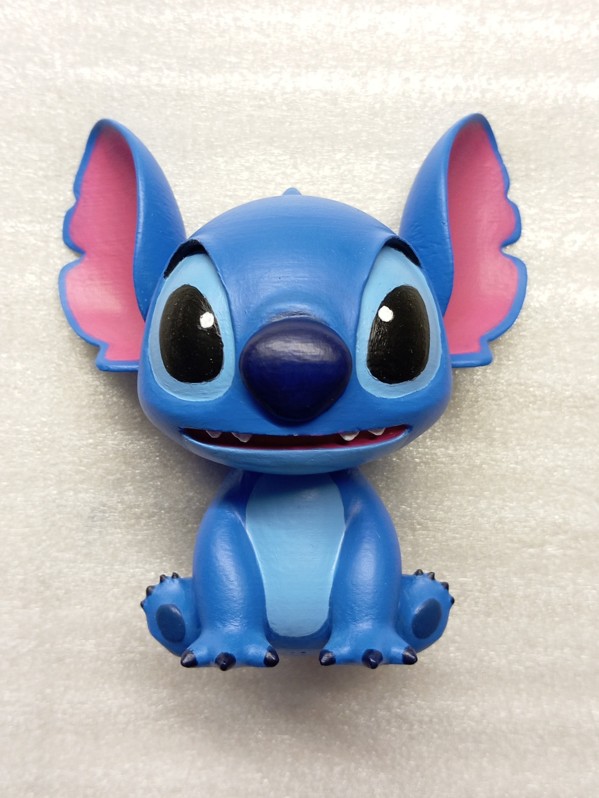
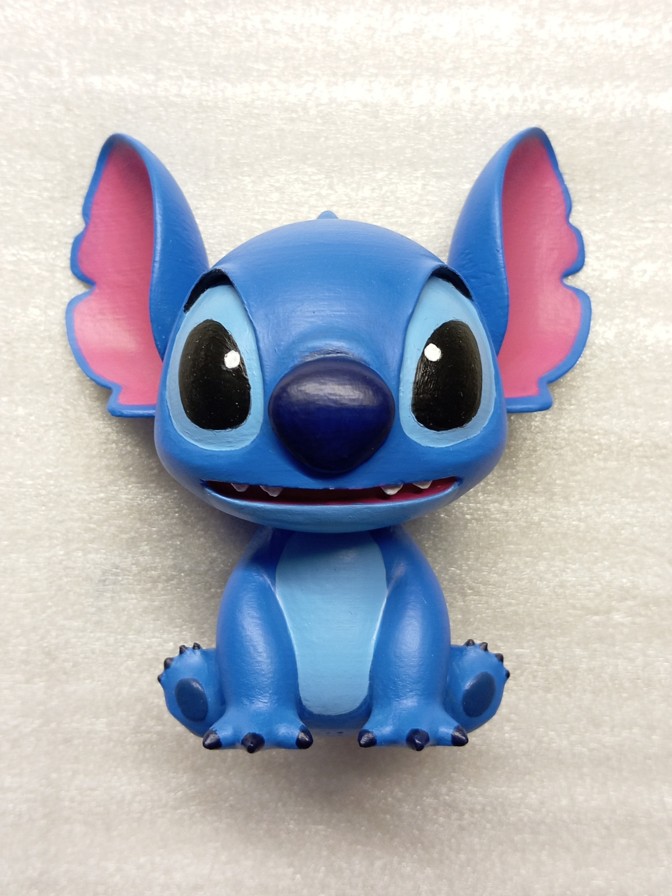

Фигурка стича
 

Описание проекта
В процессе работы над фигуркой Миты я захотел потренироваться в покраске, ведь кисточки я держал в последний раз еще в школе на уроках ИЗО. К тому же не так давно был день рождения брата, поэтому я совместил эти 2 вещи. Таким образом появилась эта фигурка Стича, которую я подарил брату, а также получил первый опыт покраски подобных моделей, перед тем, как приступать к более масштабной миниатюре.
Помимо всего прочего, это позволило мне отработать всю технологию. Я бы даже с уверенностью сказал, что после этой работы я могу сделать полноценный гайд по созданию подобных миниатюр на 3д принтере. Именно это я и сделал, технически. Руки дошли только до шортса, смонтированного на коленке.
Реализация
Начал, естественно, с поиска модели. Многие не понравились, но нашел ту модель, которая выглядела не очень сложной, плюс имела разноцветный рендер, с которым покраска шла гораздо проще.
Напечаталась она тоже очень хорошо, хотя места над поддержками требовали дополнительной обработки. Печатал синим PETG пластиком на принтере Prusa mk3s, который достался мне от заказчика для улучшения. Подробнее можно узнать в другом проекте.
Далее шла муторная и долгая работа со шпаклевкой и нождачкой. Больше всего времени уходит именно на это. Я использовал какую-то шпаклевку для дерева. Она очень быстро сохнет, стоит не дорого, разводится обычной водой до нужной консистенции так еще и обрабатывается легко. Наверное лучшее приобретение. В общем наносил я 2 слоя: первый довольно густой, чтобы быстро закрыть все углубления и впадины от слоев 3д печати, а потом уже более жидкой шпаклевкой тонким слоем закрывал царапины и остальные косяки. Зернистость нождачки использовал от 120 до 240, поверхность получалась довольно гладкой. Однако потом я немного пожалел, что поторопился и не довел поверхность до идеала.
После этого идет процесс грунтовки. Я использовал серый аэрозольный грунт. Он тоже был дешевый и сработал более чем хорошо. Не заморачивался с нанесением нескольких слоев, буквально нанес один основной слой, и потом добавил где было нужно. Грунтовка позволяет увидеть все неровности и царапины на монотонном цвете. Именно тут я увидел что есть еще куча мест, требующих доработок, но я не стал тратить на это еще больше времени.
Самый интересный этап: покраска. Как я и говорил, последний раз держал кисти еще в школе, однако получилось очень хорошо. Но давайте по порядку. Сначала я купил набор дешевых красок и не мог понять почему все так плохо, цвета буквально не ложились, а второй слой краски растворял и стирал первый. После этого взял краски дороже, в маленьких тюбиках и наконец-то получилось покрасить хорошо. Белый цвет особенно отличался, в дешевой краске его вообще не видно.
Ну и сама покраски модели: все прошло гладко. Я занимался этим на стримах и записи оставил на канале. Сначала нанес основные цвета: это синий для тела и розовый для ушей. Уши кстати рисовал от руки, не использовал трафарета или чего-то подобного, из-за этого граница получилась не идеально, но я постарался сделать ее наилучшим образом.
Потом начал добавлять мелкие детали, такие как голубое брюшко, глаза и тд. Был один нюанс: в некоторых местах краска почему-то скатывалась, будто не хотела смачивать поверхность. Но вероятно это было из-за того, что грунт не везде лёг одинаково или из-за самой поверхности. В любом случае, когда краска чуть-чуть подсохла она ложилась нормально. Я разводил ее до консистенции молока, укрывистость у нее хорошая, поэтому этого было достаточно. Но хочу заметить что черная краска имела укрывистость чуть хуже остальных цветов. Не знаю с чем это связано, но на глаза я нанес больше слоев чем на другие части.
Я еще думал применить какие-нибудь специальные техники покраски, чтобы добавить объема, сделать блики и тени, но когда я все ближе подходил к финальному результату, мне все меньше хотелось испортить его неаккуратным движением. Собственно покраска получилась довольно простой
Ну и рисунок на спине. Его не было на референсе, поэтому пришлось искать другие картинки, с другого ракурса. Накидал схему на бумаге и попробовал повторить ее на фигурке. Вышло здорово, и цвет подобрал хорошо.
Можно заметить некие потертости и сколы краски на хвосте и волосках. Это вероятно произошло из-за трения фигурки об бумагу, которую я использовал в качестве коврика. Надо следить за этим.

А вот и финальный результат. До лака и после. Про лак ничего особенного не скажу, от той же фирмы что и грунт, все четко.
Всего на эту фигурку было потрачено чуть больше двух недель неспешной работы, иногда по ночам, иногда днем в свободное время. На покраску же ушло 9 часов в общем. Думаю для первого раза неплохо.
Считаю, это был супер полезный опыт, как минимум закрепил все навыки от шпаклевки до покраски. Хотя, забегая вперед, навык шпаклевки вырос еще больше на фигурке Миты, но об этом в следующий раз. Фигурка была успешно подарена, хотя сюрприза не получилось, брат зашел на последний стрим по покраске и увидел все раньше времени.